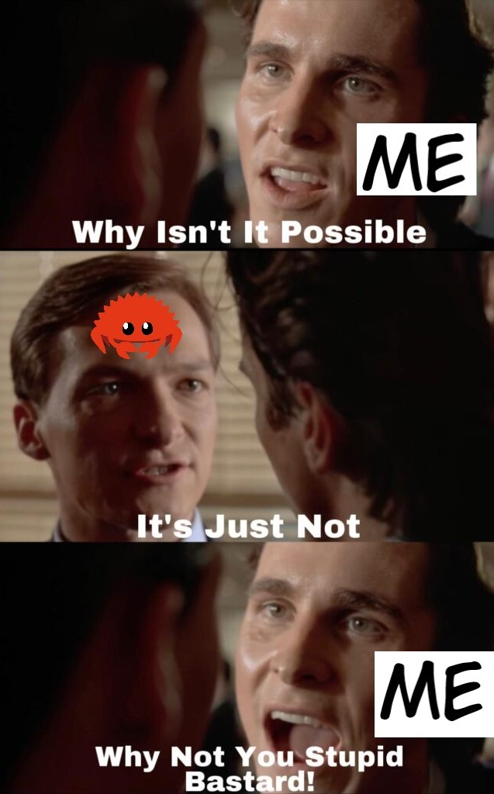
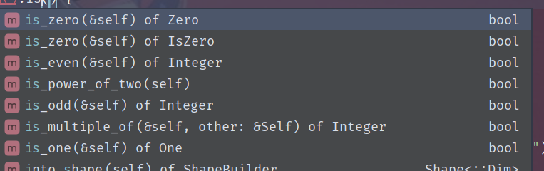

obviously just my opinion, please don't dox me
over the summer i got into rust
not of my own volition, but because my friends said it was a great tool for building CLIs
and i was thinking of building a CLI for automatically running, checking, and diffing
usaco + cf solutions
so like an absolute buffoon, i went along with it for whatever reason
the very next day, they just disappeared and left me,
the only one without any prior rust experience, to rot in backlog hell
"well piss", i thought, "but frick it, i made a goddamned commitment and i'm going to do this"
what a mistake that was

god, i hate this cheeky little crab with a vengeance
rust starts out pretty fine, actually
(btw if anyone's curious i learned it from here)
alright, the exclamation mark seems a bit weird, but other than that it's just a standard language right?
right?
but anyways, rust does has some pretty neat qol stuff, like:
- no parenthesis for control flow statements
- builtin nice tuple support (ahem, c++, ahem)
- sick range syntax with inclusivity/exclusivity
- dynamic type inference with some exceptions, but still it's really good for a statically typed langauge like rust
yeah, pretty cool!
but just as you think it's all fine & dandy, and think you're ready to take on functions:
```rust fn bruh_moment(x: String) { let y = x; } fn main() { let x = "bro...".to_string(); // <- also very stupid bruh_moment(x); dbg!(x); } ```rust just punches you in the face with THIS:
```rust error[E0382]: use of moved value: `x` --> src/main.rs:8:10 | 6 | let x = "bro...".to_string(); | - move occurs because `x` has type `String`, which does not implement the `Copy` trait 7 | bruh_moment(x); | - value moved here 8 | dbg!(x); | ^ value used here after move For more information about this error, try `rustc --explain E0382`. ```WHAT THE HECK??
TURNS OUT, if you just define a raw type (other than primitives), the function TAKES OWNERSHIP of the value and you just CAN'T USE IT AGAIN
but at least in this sample code snippet, you can fix it by doing this:
```rust fn bruh_moment(x: &String) { let y = x; } fn main() { let x = "bro...".to_string(); bruh_moment(&x); dbg!(x); } ```thus embodies the essence of rust:
it's memory safe, but at what cost?
anyways, i decided to practice rust by redoing advent of code 2015, which i'd previously done in python
(you can find the src
here)
and thus began a series of interactions with the rust compiler which mostly went like this:
and i feel like that took away half my sanity
it's not just the ownership system- even simple stuff like converting to an integer is kinda convoluted
```rust let i = "1".parse::<i32>().unwrap(); // bruh just give us a global function or something ```in fact, i've had so many problems with rust's "i'm not like other languages" style that i've compiled a list of grievances (very long!!!)
- sometimes you're casually chaining a function and then this happens ```rust error[E0716]: temporary value dropped while borrowed --> src\bin\day1.rs:4:18 | 4 | let digits = fs::read_to_string("input/day1.txt").expect("you done messed up").trim(); | ^^^^^^^^^^^^^^^^^^^^^^^^^^^^^^^^^^^^^^^^^^^^^^^^^^^^^^^^^^^^^^^^^ - temporary value is freed at the end of this statement | | | creates a temporary which is freed while still in use ... 7 | for d in digits.trim().chars() { | ------------- borrow later used here | = note: consider using a `let` binding to create a longer lived value ``` for a language that does have a ton of functional programming features, this is a problem, to say the least
-
this is where rust's "no implicit conversion EVER" gets you
```rust
error[E0369]: cannot subtract `char` from `char`
--> src\bin\day1.rs:13:35
|
13 | total += digit_vec[i] - '0';
| ------------ ^ --- char
| |
| char
```
you could've just given an RTE for overflow, yknow?
even worst is when you have to do stuff like this ```rust (n - 4 * k.pow(2) - 3 * k, k) ``` in this segment, `n` and `k` are `u32`'s, and you have to return an `i32`
yeah.... you have to cast the numbers EVERY DAMN TIME YOU USE THEM -
rust's string system by itself is loony as all frick
`String`, `&str`, `&String`, `OsStr`, why the PISS are there so many types
and especially indexing
they have an `.nth()` function, but that takes linear time
why is it that basically EVERY OTHER LANGUAGE can do constant time string indexing but rust???? -
sometimes rust's type inference system just has a stroke for no reason at all
```rust
let nums: Vec<i32> = row.split_whitespace()
.map(|n| n.parse::<i32>().unwrap_or(0))
.collect();
```
WHY ARE THE TYPE ANNOTATIONS NEEDED?
WHAT POSSIBLE AMBIGUITY COULD THERE BE? - ```rust let ring = (SQUARE_ID as f32).sqrt() as u32; ``` i can't believe you have to do this just to get the floor of a square root
- why can arrays have `i32` or `usize` as indices BUT NOT `Vec`s?
- this is where no good ternary expression and no conversion gets you. ```rust ring -= if ring % 2 == 0 { 1 } else { 0 }; ``` *slow clap*
- why is there the `&` token AND the `.as_ref()` function?
-
```rust
error[E0597]: `occs` does not live long enough
--> src\bin\day4.rs:30:21
|
27 | if seen.contains(&occs) {
| -------------------- borrow later used here
...
30 | seen.insert(&occs);
| ^^^^^ borrowed value does not live long enough
31 | }
| - `occs` dropped here while still borrowed
```
then.
just.
have it live long enough?
idk rust, this seems like a you problem - for some godforsaken reason you can't use external variables/generic types in sub functions even though all the other languages that have nested functions support it
-

who on god's green earth thought these functions were a good idea
anyways, my main problem with rust is the sheer anxiety it gives you through how many things it makes you consider when writing your code
actually i wouldn't say problem, more like just it's different, and it's gonna take a hell of a long time for me to get used to it.